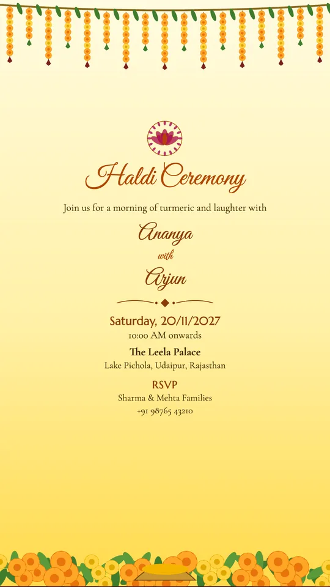
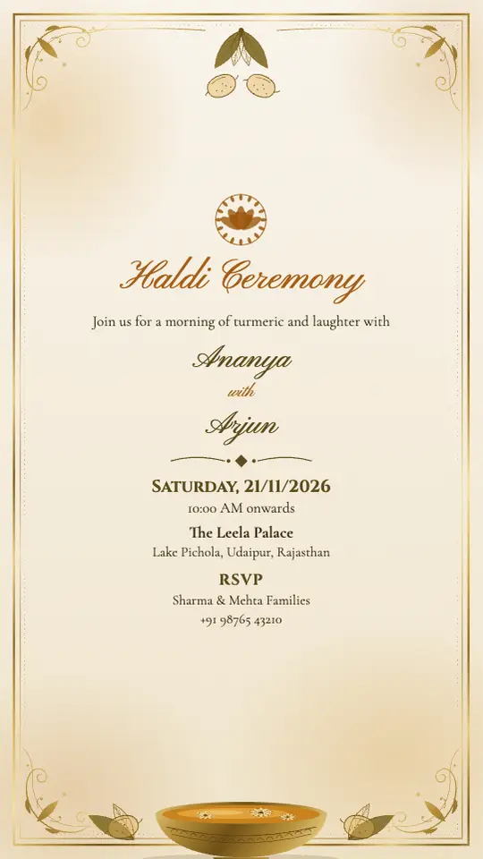

Save the Date · Ring Ceremony · Haldi · Mehendi · Sangeet · Wedding (Vivah) · Reception
Haldi invitations
Haldi, Pithi in Gujarati homes and Mangala Snanam in Tamil ones, is the turmeric ceremony held a day or two before the wedding. It is usually a morning event at home with close family, so the card can be informal and bright. Give the time, the place, and a dress code if you have one: many families ask guests to wear yellow, and to wear something they don't mind staining.
Haldi cards are almost always shared on WhatsApp rather than printed, so download the phone format. If the Haldi is in the same place as another function, say so to save guests a second address.
Every design below opens in the editor with sample wording for this ceremony. You can switch any card to English, Hindi, Marathi, Gujarati, Punjabi or Tamil once it is open.

Marigold & Haldi Sunshine
English · Floral, no deity
Pale butter yellow with a marigold toran hanging along the top and a bank of orange and yellow marigolds along the bottom. The script heading and English text keep it light and cheerful, which is what a Haldi morning usually is. No religious line, so it works for any family.

Mangala Snanam Turmeric Bath
Tamil · Tirupati Balaji
Mangala Snanam is the auspicious ritual bath before a Tamil wedding, the southern counterpart of Haldi. This card glows in turmeric orange with a gold temple-toothed border, a brass kalash with mango leaves at the bottom, and palm fronds at the corners. Text is in Tamil with a Venkateshwara invocation.

Turmeric Splash
English · Floral, no deity
Cream paper with a few mango leaves at the top and a brass urli of turmeric paste at the bottom, painted in soft gold. It is calmer than most Haldi cards, which suits a small morning ceremony at home. English text in script and serif, with no religious line.

Haldi Kalash Saffron
Hindi · Lord Ganesha
Burnt saffron with a marigold bandhanwar across the top and a brass kalash, topped with a coconut, glowing at the bottom. The Hindi sample under हल्दी रस्म opens with a Ganesha line. It suits North Indian families who want the Haldi card to match the colour of the day.

Pithi Mirror Work
Gujarati · Lord Ganesha
Pithi is the Gujarati name for the turmeric ceremony. Mustard yellow with a stitched border of tiny mirror dots, and a half mandala in red, gold and white at the bottom that recalls Kutchi mirror embroidery. Text is in Gujarati under પીઠી પ્રસંગ, opening with a Ganesha line.

Rangoli Haldi
Marathi · Lord Ganesha
Cream with a mango-leaf toran across the top and a colourful half rangoli rising from the bottom edge, drawn in dotted strokes like poured rangoli powder. The Marathi sample is headed हळदी समारंभ, with a Ganesha invocation. A good match if your Haldi is at home with a rangoli at the door.
Not sure what to write? Read the wording guide for every ceremony.